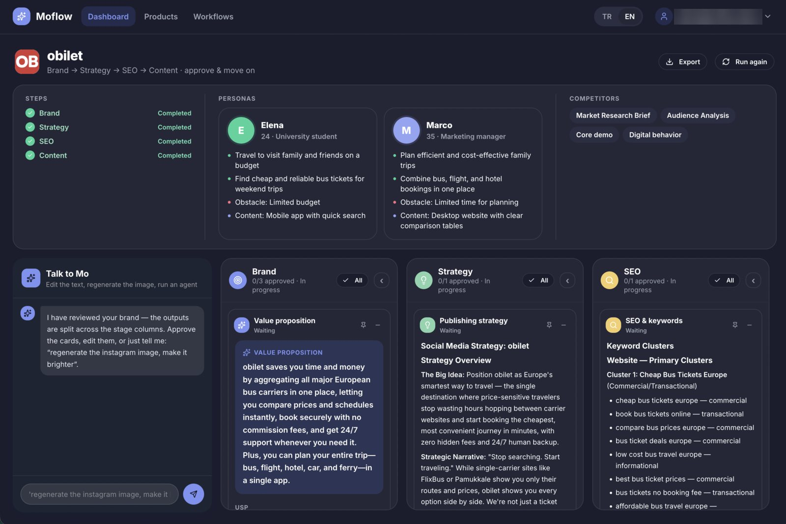
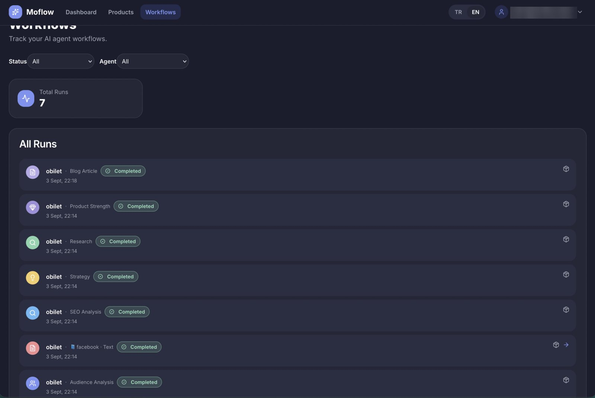
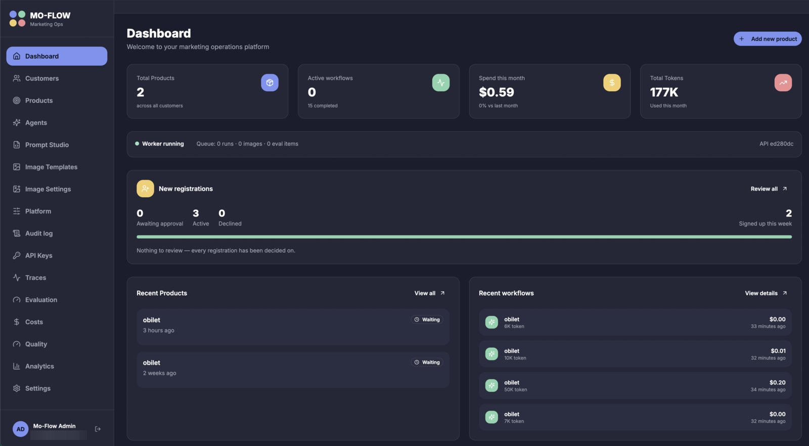
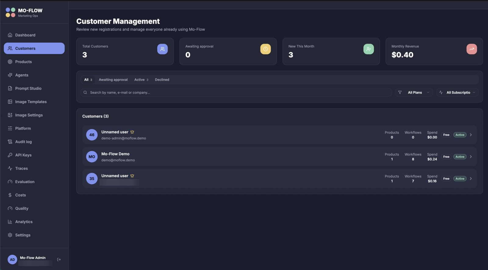
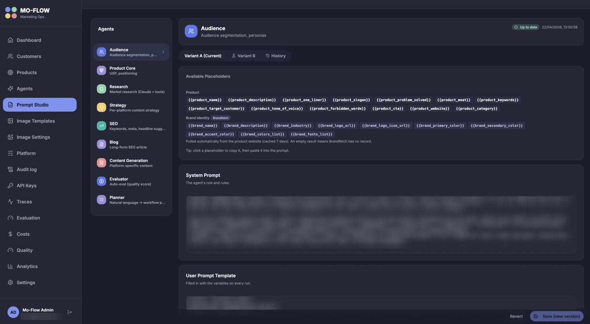
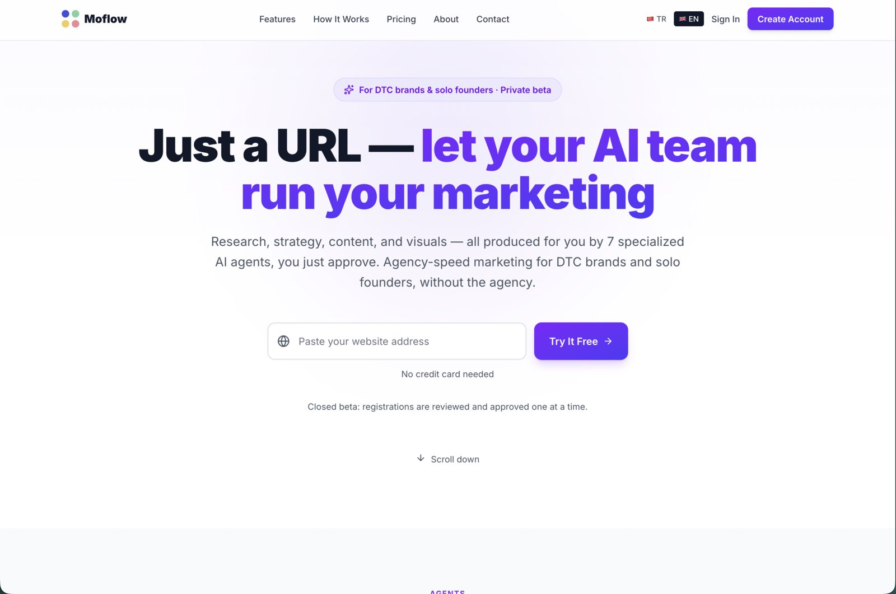
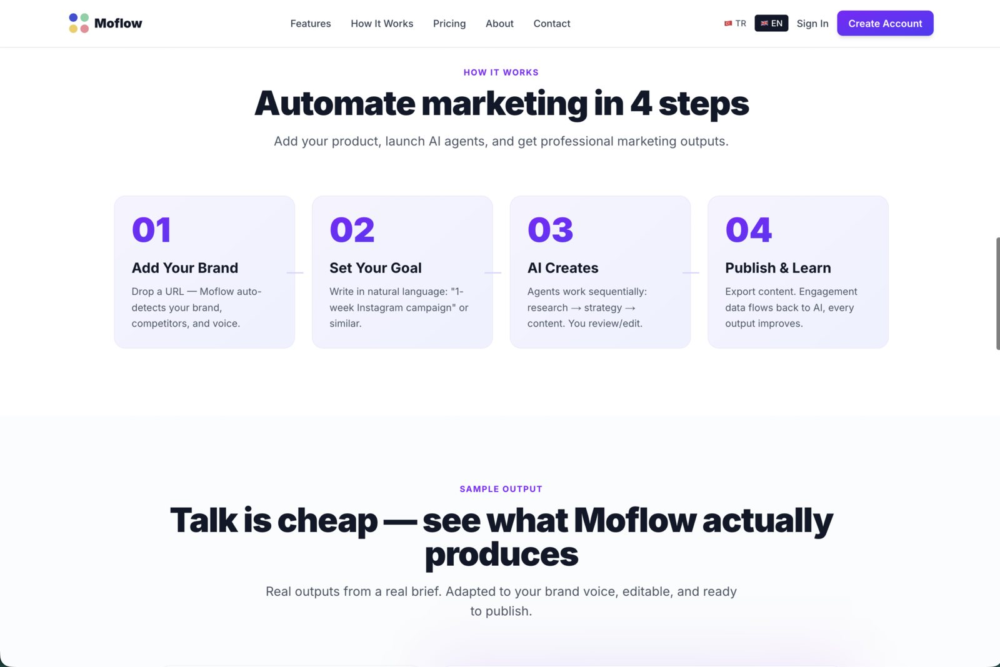
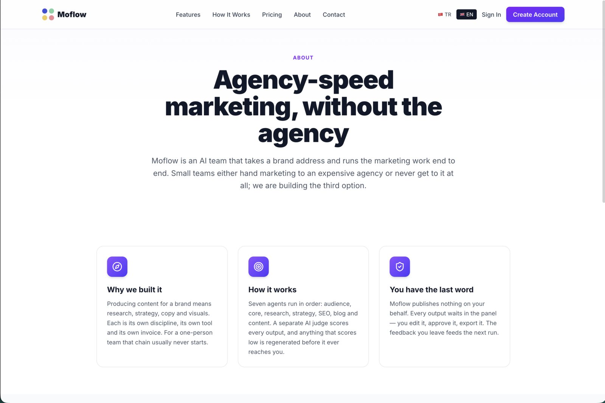
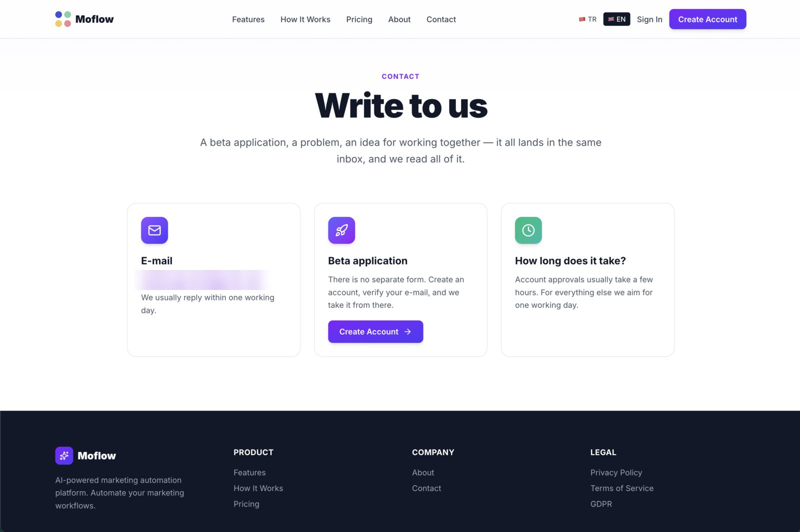

Tek bir marka URL'sinden yola çıkıp kitle analizi, pazar araştırması, konumlama, strateji, SEO, blog ve platforma özel içerik üreten yedi ajanlı bir SaaS kurdum. Her çıktıyı bir LLM hakem puanlar, düşük skor yeniden üretimi tetikler, öğrenilenler markanın hafızasına yazılıp bir sonraki koşuyu besler. Müşteri paneli, yönetim paneli, tanıtım sitesi, API ve kuyruk worker'ı ile birlikte kapalı betada yayında. I built a seven-agent SaaS that starts from a single brand URL and produces audience analysis, market research, positioning, strategy, SEO, a blog article and platform-specific content. An LLM judge scores every output, a low score triggers regeneration, and what was learned is written to the brand's memory to feed the next run. It is live in closed beta with a customer panel, a backoffice, a marketing site, an API and a queue worker.
demo@moflow.demo / PAROLA_BEKLENIYOR_1demo-admin@moflow.demo / PAROLA_BEKLENIYOR_2Kullanıcı yalnızca bir URL verir. Sayfa SSRF korumalı bir istemciyle taranır, marka kimliği taslağı çıkarılır ve API yedi ajanı bir zincir olarak kuyruğa yazar. Worker adımları sırayla alır; her ajan yalnızca gerçekten ihtiyaç duyduğu üst çıktıları okur. İlerleme panele SSE ile canlı akar. The user supplies just a URL. The page is scraped through an SSRF-guarded client, a brand identity draft is extracted, and the API enqueues the seven agents as a chain. The worker claims the steps in order; each agent reads only the upstream outputs it actually needs. Progress streams to the panel live over SSE.
Hangi ajanın kimi okuduğu tek bir tabloda tutulur; zincir bu grafiğin topolojik sırasıdır. İlk İngilizce koşuda core ajanı 5.3 aldı. Kök neden prompt değil grafikti: konumlama, pazar araştırmasını hiç görmeden yazılıyordu ve research → core ölü bir kenardı. Grafik yeniden çizildi, sıra değişti.Who reads whom lives in one table; the chain is that graph's topological order. On the first English run the core agent scored 5.3. The root cause was the graph, not the prompt: positioning was being written without ever seeing the market research, and research → core was a dead edge. The graph was redrawn and the order changed.
Hakem, çıktıyı onu üreten girdilerle birlikte görür ve puanlar; eşik altı yeniden üretilir. Kullanıcı düzenlemeleri sürümlenir, geri bildirim ve skorlar markaya özel hafızaya yazılır. Aynı marka için ikinci koşu birincinin öğrendikleriyle başlar.The judge sees an output together with the inputs that produced it and scores it; anything under the threshold is regenerated. User edits are versioned, and feedback and scores are written to a per-brand memory. The second run for a brand starts from what the first one learned.
Her LLM çağrısı, token sayısı ve maliyetiyle birlikte iz (trace/span) olarak kaydedilir. Demo hesabındaki veri, gerçek modellerle bir kez koşturulmuş tek bir zincirdir: 6 ajan + 2 içerik + blog + 3 görsel, $0.2413. Bütçe kapısı limit aşılınca koşuyu durdurur.Every LLM call is recorded as a trace/span with its token count and cost. The data in the demo account is one chain run once against real models: 6 agents + 2 content pieces + a blog + 3 images, $0.2413. A budget gate stops a run when the limit is crossed.
npm workspaces üzerinde tek bir TypeScript monorepo: 5 uygulama, 12 paket. Kesin kural: api ve worker birbirini asla import etmez; ortak her şey packages/* altındadır. Veritabanı kendi barındırdığım MySQL 8.4 — satır düzeyi güvenlik olmadığı için yetkilendirme tamamen uygulama katmanındadır.
One TypeScript monorepo on npm workspaces: 5 apps, 12 packages. A hard rule: api and worker never import each other; everything shared lives under packages/*. The database is self-hosted MySQL 8.4 — there is no row-level security, so authorization lives entirely in the application layer.
| UygulamaApp | TeknolojiStack | GörevRole |
|---|---|---|
| api | Hono · Zod · Better Auth · Drizzle | 112 route, 5 yetki katmanı (anon / session / user / owner / admin), SSE, hız sınırı, denetim kaydı112 routes, 5 authz layers (anon / session / user / owner / admin), SSE, rate limiting, audit log |
| worker | Node 22 · tsup | dört kuyruk, 10 aşamalı adım döngüsü, hakem, bütçe kapısı, hafıza, saklama süresi süpürücüsüfour queues, a 10-stage step loop, judge, budget gate, memory, retention sweeper |
| panel | React 19 · Vite 8 · Tailwind 4 | müşteri SPA'sı — 14 route, TR/EN, pano + marka görünümü + “Mo” sohbeticustomer SPA — 14 routes, TR/EN, board + brand view + “Mo” chat |
| backoffice | React 19 · Radix · Recharts | yönetim SPA'sı — 23 route: müşteri onayı, Prompt Studio, izler, maliyet/kalite, API anahtar kasasıadmin SPA — 23 routes: customer approval, Prompt Studio, traces, cost/quality, API-key vault |
| landing | Next.js 16 | tanıtım sitesi — API ile hiç konuşmaz, CTA'lar panele derin bağlanırmarketing site — never talks to the API, CTAs deep-link into the panel |
Ajan koşuları, görsel işleri, genel işler (e-posta, dışa aktarım, silme) ve toplu değerlendirmeler ayrı slot havuzlarında çalışır. Eskiden tek tur vardı ve dakikalar süren bir görsel işi bütün ajan hattını bekletiyordu. Bütçeler bilerek paylaşılmaz: resvg ana iş parçacığında senkron çalışır, 2 vCPU'da fazladan görsel slotu verim kazandırmaz, yalnızca ajanların I/O'sunu geciktirir.Agent runs, image jobs, general jobs (mail, export, purge) and batch evaluations run in separate slot pools. There used to be a single round, and a multi-minute image job stalled the whole agent pipeline. Budgets are deliberately not shared: resvg rasterises synchronously on the main thread, so on 2 vCPUs extra image slots buy no throughput and only delay the agents' I/O.
SIGTERM'de worker yeni iş almayı keser ve 20 sn içinde elindekini bitirir (görsel sağlayıcı iptal sinyalini yok saydığı için 10 değil 20). 30 sn'lik kalp atışları, 60 sn'de takılma tespiti ve sahipsiz kalan koşuları geri alan bir toplayıcı var. Hesap ve marka silme iki aşamalıdır: önce dondur, 7/14 gün sonra kalıcı sil.On SIGTERM the worker stops claiming and finishes what it holds within 20 s (20, not 10, because the image provider ignores abort signals). There are 30 s heartbeats, stall detection at 60 s, and a reaper that reclaims orphaned runs. Account and brand deletion is two-phase: freeze first, purge after 7/14 days.
İki arayüz de API'ye Hono'nun tipli RPC istemcisiyle (hc<AppType>) bağlanır; yanıt tipleri route'un kendisinden türetilir. Elle yazılmış 117 yanıt tipini tek seferde silmek, o güne kadar sessizce yanlış çalışan üç canlı hatayı derleme hatası olarak ortaya çıkardı.Both front ends reach the API through Hono's typed RPC client (hc<AppType>); response types are derived from the route itself. Deleting 117 hand-written response types in one pass surfaced three live bugs that had been silently wrong, as compile errors.
Sosyal medya görselleri iki yoldan gelir: marka renkleri ve şablon yuvalarıyla satori + resvg kompozisyonu, ya da fal.ai üzerinden üretim (yedek sağlayıcıyla). İndirilen her dış görsel, URL taramasıyla aynı SSRF korumalı istemciden geçer.Social images come two ways: satori + resvg composition with the brand's colours and template slots, or generation through fal.ai (with a fallback provider). Every downloaded external image goes through the same SSRF-guarded client as URL scraping.
Bu sayfadaki canlı bağlantıları verebilmek için tasarlandı. Soru şuydu: bir yabancıya, yönetim paneli dahil her ekranı gösterip hiçbir şeyi değiştirememesini ve tek kuruş harcatamamasını nasıl garanti ederim? Cevap 80'den fazla butonu tek tek kapatmak değil, tek bir sunucu kapısı oldu. It was designed so the live links on this page could exist. The question: how do I show a stranger every screen, backoffice included, while guaranteeing they can change nothing and spend not a cent? The answer was not disabling 80+ buttons one by one, but a single server-side gate.
role neyi görebileceğini, status içeri alınıp alınmadığını, yeni read_only bayrağı ise gördüğünü değiştirip değiştiremeyeceğini söyler. Bir viewer rolü eklemek bütün isAdmin() kontrollerini ve müşteri filtrelerini kirletir, üstelik “salt-okunur müşteri”yi yine ifade edemezdi. Kanıtı: mevcut rol testlerine dokunulmadı ve yeşil kaldılar.role says what you may see, status whether you are let in, and the new read_only flag whether you may change what you see. A viewer role would have polluted every isAdmin() check and customer filter, and still could not express a “read-only customer”. The proof: the existing role tests were left untouched and stayed green.
65 satırlık bir middleware, kimlik doğrulama işleyicisinden ve bütün route'lardan önce çalışır. Güvenli metotlar (GET/HEAD/OPTIONS) oturuma bile bakılmadan geçer — 60 okuma route'una maliyeti sıfır. Geri kalanlarda hesap salt-okunursa 403 read_only. Kapı yönlendirmeden önce olduğu için var olmayan bir yol da aynı cevabı alır: neyin var olduğu bile sızmaz.A 65-line middleware runs before the auth handler and every route. Safe methods (GET/HEAD/OPTIONS) pass without even a session lookup — zero cost on the 60 read routes. For the rest, a read-only account gets 403 read_only. Because the gate sits before routing, a nonexistent path gets the same answer: not even what exists leaks.
| Demo hesabı…The demo account… | KapsamScope | Sunucu cevabıServer answer |
|---|---|---|
| yapabilircan | giriş, çıkış ve rolünün eriştiği bütün GET'ler: müşteriler, analizler, denetim kaydı, izler, maliyet/kalite panoları, değerlendirmeler, Prompt Studiosign in, sign out, and every GET its role reaches: customers, analytics, audit log, traces, cost/quality dashboards, evaluations, Prompt Studio | 200 |
| yapamazcannot | manifestteki GET olmayan 51 route'un tamamı; para harcatan 13 uç noktanın hepsi (hepsi POST olduğu için metot kuralı maliyet yüzeyini kendiliğinden kapatır); kimlik katmanının kendi yazmaları — parola/e-posta değiştirme, hesabı silme, diğer oturumları kapatmaall 51 non-GET routes in the manifest; all 13 money-spending endpoints (every one is a POST, so the method rule closes the cost surface by itself); the auth layer's own writes — change password/e-mail, delete account, revoke other sessions | 403 read_only |
| göremez bilecannot even see | sağlayıcı API anahtarı kasası. Gizli değer zaten hiçbir uç noktadan dönmez; ama son dört hane, rotasyon tarihleri ve hangi sağlayıcıların kurulu olduğu da envanteri anlatır. Menüden de gizlenir.the provider API-key vault. The secret is never returned by any endpoint anyway; but the last four characters, rotation dates and which providers are configured describe the inventory too. It is hidden from the menu as well. | 404 |
Demo hesabının parolasını değiştirebilen bir ziyaretçi, diğer bütün ziyaretçileri dışarıda bırakır. Bu yüzden kilit uygulama route'larında değil, kimlik kütüphanesinin uç noktalarını da kapsayacak şekilde en dışta durur. Yalnızca iki yazma geçer: giriş ve çıkış.A visitor who could change the demo account's password would lock every other visitor out. So the lock does not sit on the application routes but at the very outside, covering the auth library's endpoints too. Exactly two writes survive: sign in and sign out.
read_only hiçbir istek şemasında yoktur; yalnızca sunucudaki iki CLI betiği değiştirebilir. Çalınmış bir admin oturumu bile demo hesabının kilidini açamaz. Sıra da önemlidir: hesap yazılabilir açılır, zincir gerçek bir markayla bir kez koşturulur, sonra kilitlenir — kilitli hesap kendi verisini üretemez.read_only appears in no request schema; only two CLI scripts on the server can change it. Even a stolen admin session cannot unlock a demo account. Order matters too: the account is created writable, the chain is run once against a real brand, then it is locked — a locked account cannot generate its own data.
Arayüzde kalıcı bir şerit durumu söyler (role="status" — olay değil, süregelen bir koşul), yazma denemesi açıklayıcı bir uyarıyla döner. 80'den fazla çağrı noktasını tek tek işaretlemek “nezaket, güvenlik değil” diye reddedildi: güvenlik sunucuda zaten var, sıfırlanacak bir veri de yok.A permanent strip in the UI states the condition (role="status" — a standing state, not an event), and a write attempt comes back with an explanatory toast. Marking 80+ call sites individually was rejected as “manners, not security”: the security is already on the server, and there is no data to reset.
403, anahtar kasası 404, admin GET'leri normal, parola değiştirme kapalı, çıkış açık, anonim kayıt ve normal hesaplar etkilenmemiş. Üstüne iki tarayıcı senaryosu, iki temada axe taraması. Sonra mutasyonla doğrulandı: kapı app.ts'ten sökülünce 51 yazma uç noktası işleyicisine ulaştı ve 5 test kırıldı; geri takılınca yeşile döndü. Ayrıca belgedeki bir güvenlik iddiasına güvenmek yerine canlı veritabanına bakıldı: E2E test hesapları üretimde hiç var olmamıştı.The test does not count routes by hand; it walks the API's route manifest: every non-anonymous non-GET route 403, the key vault 404, admin GETs normal, change-password closed, sign-out open, anonymous sign-up and normal accounts unaffected. On top, two browser scenarios with an axe scan in both themes. Then it was mutation-verified: with the gate removed from app.ts, 51 write endpoints reached their handlers and 5 tests broke; put back, green again. And instead of trusting a documented security claim, the live database was checked: the E2E test accounts had never existed in production.Projenin QA tarafındaki ana fikri: bir kere ulaşılan kalite, onu tutan bir kapı yoksa geri kayar. CI üç iştir — gerçek bir MySQL 8.4 servisiyle birim/entegrasyon, üretim imajlarını ayağa kaldıran kabul testi ve Playwright E2E. Her kapı gerçek bir olaydan doğdu. The project's core QA idea: quality reached once slides back unless a gate holds it. CI is three jobs — unit/integration against a real MySQL 8.4 service, an acceptance job that boots the production images, and Playwright E2E. Every gate was born from a real incident.
#EF4444 beyaz üstünde 3.76:1 kontrast veriyordu (AA 4.5 ister); #B91C1C ile 6.47:1 oldu. Asıl ders kök nedendeydi: tarama listedeki ilk müşteriyi açıyordu, o da taramayı yapan adminin kendi hesabıydı ve kendi sayfasında bu butonlar çizilmiyordu. İki yeni hesap sıralamayı değiştirene kadar buton hiç taranmamıştı.Every screen is scanned with axe (WCAG 2 A+AA) and a violation fails the build — because an earlier “zero violations” had slid back to ~100 in five weeks. When the demo accounts were added the gate caught a real bug: the red #EF4444 on the “Lock account” button gave 3.76:1 contrast on white (AA needs 4.5); #B91C1C made it 6.47:1. The real lesson was the root cause: the sweep opened the first customer in the list, which was the scanning admin's own account, on whose page those buttons are not drawn. Until two new accounts changed the sort order, the button had never been scanned.112 route'un her biri, gereken asgari yetki katmanıyla tek bir tabloda durur. Test bunu canlı router'la iki yönde karşılaştırır: manifestte olmayan yeni bir route da, router'da olmayan bir satır da CI'ı kırar. Aynı tablo yetki testlerini ve salt-okunur testini sürer; uç nokta dokümanı ondan üretilir.Each of the 112 routes sits in one table with its minimum required authz layer. A test compares it to the live router in both directions: a new route missing from the manifest and a line missing from the router both turn CI red. The same table drives the authz tests and the read-only test; the endpoint docs are generated from it.
Kritik yol (giriş + statik import'lar, gzip) her build'de ölçülür. Route bazlı bölme yönetim panelini 361 → 144 kB, müşteri panelini 229 → 164 kB'a indirdi; bütçe (165 / 190 kB) tek bir dikkatsiz statik import'un bunu sessizce geri almasını engeller. Deploy sonrası eski chunk 404'ü tam bir kez yeniden yüklemeyle toparlanır.The critical path (entry + static imports, gzip) is measured on every build. Route splitting took the backoffice from 361 → 144 kB and the panel from 229 → 164 kB; the budget (165 / 190 kB) keeps one careless static import from silently undoing it. A stale-chunk 404 after a deploy recovers with exactly one reload.
CI şemadan migration üretir ve fark çıkarsa kırılır — bir migration'ın snapshot zincirini bozup teşhisi bir gün sürdükten sonra eklendi. Kabul işi gerçek üretim imajlarını derler, boş veritabanına migration'ları uygular, sağlık ucunu ve bir worker turunu doğrular: “imaj derleniyor ama açılmıyor” sınıfını hiçbir birim testi görmez.CI generates migrations from the schema and fails on any diff — added after one migration broke the snapshot chain and took a day to diagnose. The acceptance job builds the real production images, applies migrations to an empty database, and checks the health endpoint and one worker poll: no unit test sees the “image builds but won't boot” class.
Sahte bir LLM sunucusu iki sağlayıcının da yerine geçer; görsel üretimi test koduyla değil veritabanı ayarıyla kapatılır. Böylece kabukta gerçek anahtarlar dursa bile bir E2E koşusu ücretli bir API'ye fiziksel olarak ulaşamaz. 6 spec dosyasında 17 senaryo, 17/17 geçiyor.A mock LLM server stands in for both providers; image generation is switched off by a database setting, not a test-only branch. So even with real keys exported in the shell, an E2E run physically cannot reach a paid API. 17 scenarios across 6 spec files, 17/17 passing.
Sahiplik, her kaynakta product.user_id = user.id yüklemiyle denetlenir. Başkasının kaynağı “yasak” değil “yok” döner; var olduğu bilgisi sızmaz. CSRF/origin kapısı, salt-okunur kapısıyla aynı güvenli-metot kümesini paylaşır.Ownership is checked on every resource with the predicate product.user_id = user.id. Someone else's resource returns “not found”, not “forbidden”; its existence does not leak. The CSRF/origin gate shares its safe-method set with the read-only gate.
javascript:SSRF and javascript:Kullanıcının verdiği her URL tek bir guardedFetch paketinden geçer. z.url() javascript: şemasını kabul ettiği için API özel bir httpUrl() kullanır; arayüz de saklanan URL'leri güvenli bir sarmalayıcıdan geçirir — React'in href koruması window.open'ı kapsamaz.Every user-supplied URL goes through a single guardedFetch package. Because z.url() accepts the javascript: scheme, the API uses a custom httpUrl(); the UI also routes stored URLs through a safe wrapper — React's href protection does not cover window.open.
Sağlayıcı API anahtarları veritabanında şifreli durur ve yönetim panelinden yeniden deploy etmeden döndürülür; ortam değişkeni yalnızca yedek yoldur. Kimlik kütüphanesinin 15 ayrıcalıklı admin ucu açıkça kapatılmıştır.Provider API keys are stored encrypted in the database and rotated from the backoffice without a redeploy; the environment variable is only the fallback path. The auth library's 15 privileged admin endpoints are explicitly blocked.
Görüntüler canlı sistemden, İngilizce arayüzle alındı; üç yüzey de TR/EN çalışır (panelde iki dil dosyası eşlik testiyle tutulur). Demo verisindeki marka, zincirin gerçek bir siteyle bir kez koşturulmasından gelir. Büyütmek için tıklayın. Captured from the live system with the English UI; all three surfaces run in TR/EN (in the panel the two language files are held together by a parity test). The brand in the demo data comes from running the chain once against a real site. Click to enlarge.









Her şey tek bir VM'de Docker Compose ile koşar; önünde otomatik TLS'li Caddy vardır. API, worker ve tanıtım sitesi imajları git SHA'sıyla etiketlenir — panoda görünen sürüm odur. Everything runs on a single VM under Docker Compose, behind Caddy with automatic TLS. The API, worker and landing images are tagged with the git SHA — that is the build shown on the dashboard.
API açılışta ve sağlık ucunda şema sürümünü raporlar: ok, behind, ahead (şu an 19/19). Geride kalmak sağlık kontrolünü bilerek düşürmez: Caddy o uca bakar, sert bir hata unutulmuş bir migration'ı tam kesintiye çevirirdi.The API reports the schema version at boot and on the health endpoint: ok, behind, ahead (currently 19/19). Being behind deliberately does not fail the health check: Caddy waits on that endpoint, so a hard failure would turn a forgotten migration into a total outage.
Gecelik cron, veritabanı dökümünü, dosyaları ve şifreli ortam dosyasını sağlama toplamlarıyla paketler ve kendini doğrular. Telemetri (izler, olaylar, kullanım kayıtları) saklama süresi dolunca worker tarafından süpürülür; haftalık rapor e-postayla gelir.A nightly cron bundles the database dump, files and the encrypted env file with checksums, and verifies itself. Telemetry (traces, events, usage logs) is swept by the worker once its retention period ends; a weekly report arrives by e-mail.
| TarihDate | Kilometre taşıMilestone |
|---|---|
| 2026-02 | ilk commit; üç ajanlı prototip dönemifirst commit; the three-agent prototype era |
| 2026-09-02 | backend/altyapı fazı son güvenlik kapısıyla kapandıbackend/infra phase closed with a final security gate |
| 2026-09-03 | arayüz fazı kapandı; aynı gece ilk üretim deploy'u — kapalı betafront-end phase closed; first production deploy the same night — closed beta |
| 2026-09-08/09 | yönetim operasyonu, platform sertleştirme, kalite kapıları (974 → 1.153 test)backoffice operations, platform hardening, quality gates (974 → 1,153 tests) |
| 2026-09-10 | ortak arayüz çekirdeği, genel iş kuyruğu + e-posta, route bölme, bundle bütçesishared front-end core, general job queue + mail, route splitting, bundle budget |
| 2026-09-18 | salt-okunur demo hesabı canlıda — migration 19/19, E2E 17/17read-only demo account live — migrations 19/19, E2E 17/17 |